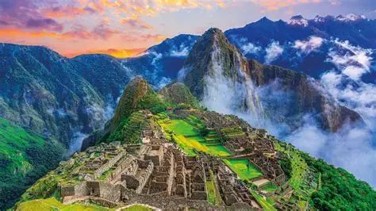

Мачу-Пикчу

Мачу-Пикчу, построенное инками в 15 веке, является одним из самых загадочных мест на Земле. Город был покинут инками и забыт на многие века, пока его не открыл американский археолог Хирам Бингем в 1911 году. Мачу-Пикчу представляет собой комплекс построек, включающий дома, храмы, бани и террасы, расположенные на вершине горы. Город считается священным местом для индейцев, которые верят, что энергия этого места способна исцелять душу и тело.